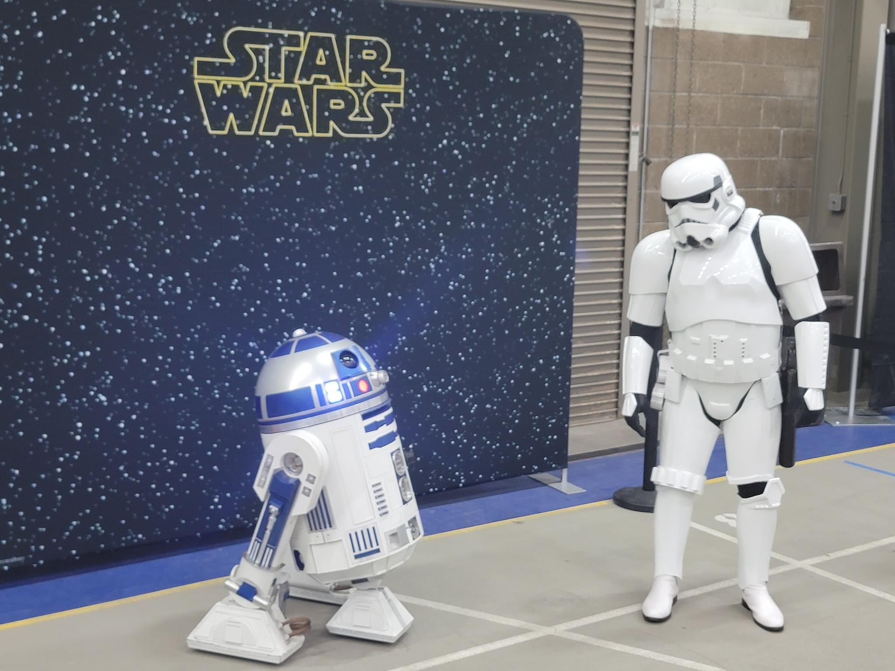
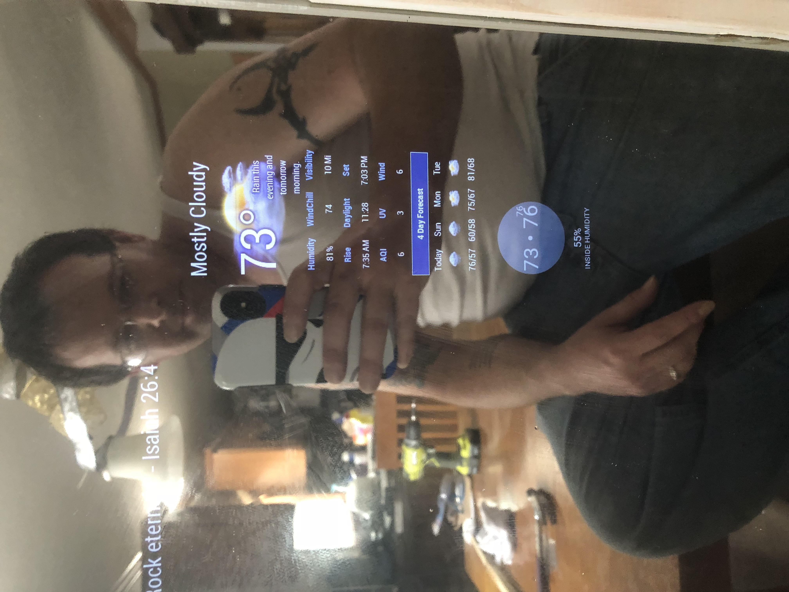
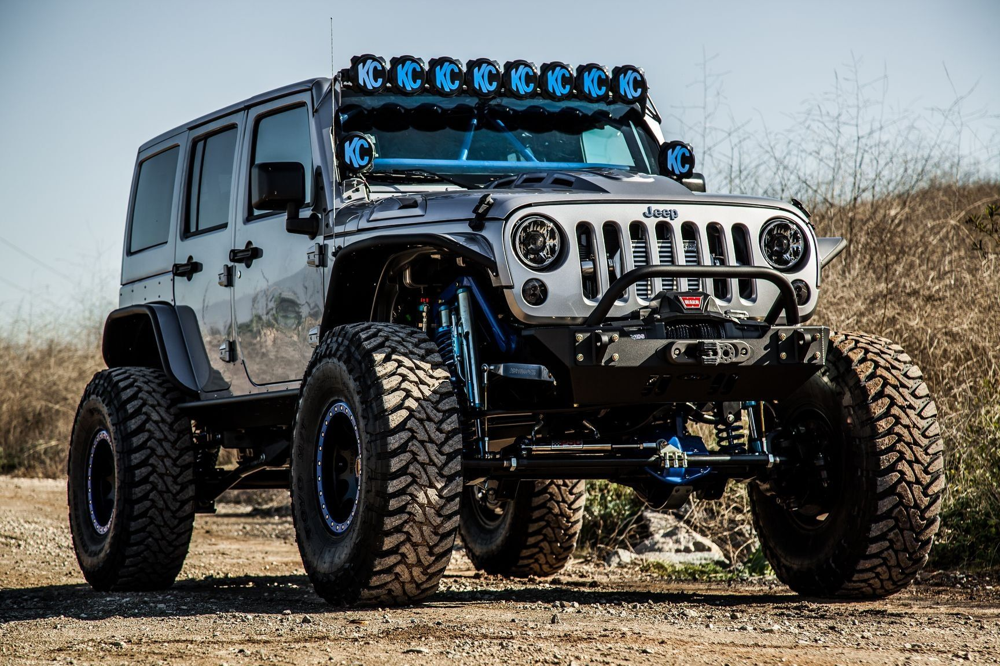

| 501st Legion | Technology | Outdoors |
|---|---|---|
|
 TK-60819 Reporting for Duty! I am an active member of the 501st Legion, an international costuming organization dedicated to celebrating STAR WARS™ through the creation and use of quality costumes that portray the villainous, morally ambiguous, or non-partisan characters from the STAR WARSTM universe. The Legion promotes interest in STAR WARS and facilitates the use of these costumes for STAR WARS-related events as well as contributes to the local community through costumed charity and volunteer work. I joined the 501st in honor of my daughter Hailie, who also loved STAR WARS, and loved spreading joy to others. |
 In my spare time, I enjoy playing with new technologies, such as creating this smart mirror (running on a raspberry pi). I enjoy creating and coming up with new inovations. I have also build a custom old school style arcade cabinet with over 300 arcade games, also running on a raspberry pi. |
 In the warmer months, I also enjoy spending as much time as I can outdoors. Camping, hiking, climbing, off-roading, or anything I can find to get out and go exploring the world around me. |
| Swimming Pool Technician | Customer Service | Management |
|---|---|---|
One of the most enjoyable jobs I’ve ever held was as a lead pool technician at Rocky Mountain Pool and Spa Care, from 2002-2007. Responsibilities included:
|
I have held multiple jobs working customer service/retail. Regardless of the brand/company, these types of jobs are based around customer service, from cashiering to stocking shelves, I learned early on that customers come first.
|
In 2010 I began working at a Burger King franchise, working my way up the ladder from team member all the way up to General Manager in 2020. In 2021 I left Burger King and started working at a corporate Taco Bell as an Assistant General Manager (AGM). Regardless of the brand, yes this is fast food but it also falls under the customer service umbrella. As a manager I have been responsible for:
|
| Leave Mark A Message |
|---|